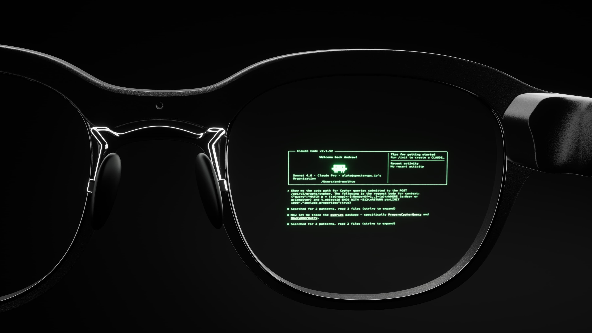

Monako Glass
Monako Glass 是一款面向 AI 编程、研究和创作工作流的智能眼镜。Mint 和 NewsBytes 均在 6 月 4 日报道其发布，Monako 官网前端文案显示其支持 Claude Code、Codex、Unreal Engine、Blender 和 After Effects 连接，并提供 19 美元预约入口。
- 为什么纳入：这是完整可穿戴终端，具备眼镜形态、显示、摄像头、扬声器、骨传导鼻梁麦克风、手势交互和自研 MonoOS，不是组件或上游平台。
- AI 与硬件能力：官方文案称其为 Agent Terminal，第三方报道写明可在抬头显示中使用 Claude Code 和 Codex 等 AI 编程工具；Mint 还提到内置视觉引擎和 0.5 TOPS NPU。
- 关键规格：约 48g，波导显示、摄像头、扬声器、骨传导麦克风、手势控制，MonoOS 使用 Linux 和 Lua 应用层。
- 边界：当前节点按发布 / 预约处理，不写成现货开售；若后续明确量产发货，再按开售或首批发货节点追踪。